7 Модуль 3: Работа с загруженными из API интерфейсов различных сервисов данными.
7.1 Отправка и стение данных из Google Таблиц
Первый вариант использования полученных ранее данных, который мы рассмотрим, это передача этих данных в Google Таблицы, для работы с Google Таблицами нам понадобится пакет googlesheets, установит его модно как с CRAN так и с GitHub.
CRAN: install.packages("googlesheets") GitHub: devtools::install_github("jennybc/googlesheets")
Основные функции для работы с Google Таблицами
gs_auth- Авторизацияgs_ws_new- Создание новой Google Таблицыgs_ws_new- Создать новый рабочий листgs_add_row- Дописать строки в существующую Google Таблицуgs_edit_cells- Изменение значений ячеекgs_key- Получение метаданных из Google ТАблицыgs_read- Загрузка данных из листа Google Таблицы
Основные аргументы функций
- ss - Объект содержащий мета данные Google Таблицы, полученные с помощью функции
gs_key - ws - Номер или название листа
- range - диапазон рабочего листа к которому вы будете обращаться
- input - данные которые необходимо отправить в Google Таблицу
- title - Название Google таблицы
- ws_title - Название рабочего листа
Пример
Представленный ниже код делает следующе:
- Проходим авторизацию в API Google диска
- Запрашиваем данные из Google Analytics
- Создаём новую Google Тбалицу и записываем в неё полученные данные -
gs_new(title = "Google Analytics Data", ws_title = paste0("GA ", Sys.Date()), input = my_core_data) - Запрашиваем данные из API Яндекс Метрики
- Создаём новый рабочий лист и передаём в него данные полученные из API Яндекс Метрики, с помощью функции
gs_ws_new. - Запрашиваем более актуальные данные из Яндекс Метрики.
- Меняем значения на листе на который мы загрузили более старые данные из Яндекс Метрики, с помощью функции
gs_edit_cells. - С помощью функции
gs_readзагружаем данные из Google Таблицы обратно в R.
# Go to work directory
setwd("D:\\Google Диск\\R Для маркетинга\\Материалы курса\\Модуль 3\\Урок 1")
# Auth
gs_auth()
# Get current user
gs_user()
############################################
# Create dox with data, write data intodox
############################################
# load data from google analytics
# start data loading
library(RGA)
my_core_data <- RGA::get_ga(profileId = "ga:170507937",
start.date = "7daysAgo",
end.date = "yesterday",
metrics = "ga:users,ga:sessions,ga:bounces",
dimensions = "ga:date,ga:source,ga:medium",
sort = "-ga:date",
filters = "ga:medium!=cpc,ga:source=@g",
segment = "sessions::condition::ga:bounces>0",
samplingLevel = "HIGHER_PRECISION",
token = readRDS("D:\\Google Диск\\R Для маркетинга\\Материалы курса\\Модуль 2\\Урок 7\\.r.for.marketing@gmail.com-token.rds")[[1]],
fetch.by = "day")
# Create dox with data
new_dox_matadata <- gs_new(title = "Google Analytics Data", ws_title = paste0("GA ", Sys.Date()), input = my_core_data)
gs_browse(new_dox_matadata)
############################################
#load data from Yandex Metrika
library(rym)
library(getProxy)
# liad data
reporting.stat <- rym_get_data(counters = "22584910",
date.from = "2018-08-01",
date.to = "yesterday",
dimensions = "ym:s:date,ym:s:lastTrafficSource",
metrics = "ym:s:visits,ym:s:pageviews,ym:s:users",
sort = "-ym:s:date",
login = "selesnow",
token.path = "D:\\Google Диск\\R Для маркетинга\\Материалы курса\\Модуль 2\\Урок 8\\metrica_token")
# add new sheet to dox
new_dox_matadata <- gs_ws_new(ss = new_dox_matadata,
ws_title = "YM Data",
input = reporting.stat)
# Get sheet title
gs_ws_ls(new_dox_matadata)
reporting.stat.prev <- rym_get_data(counters = "22584910",
date.from = "2018-07-20",
date.to = "2018-07-31",
dimensions = "ym:s:date,ym:s:lastTrafficSource",
metrics = "ym:s:visits,ym:s:pageviews,ym:s:users",
sort = "-ym:s:date",
login = "selesnow",
token.path = "D:\\Google Диск\\R Для маркетинга\\Материалы курса\\Модуль 2\\Урок 8\\metrica_token")
# add new row to sheet
new_dox_matadata <- gs_add_row(ss = new_dox_matadata,
ws = "YM Data",
input = reporting.stat)
# Get new data
reporting.stat.new <- rym_get_data(counters = "22584910",
date.from = "8daysAgo",
date.to = "yesterday",
dimensions = "ym:s:date,ym:s:lastTrafficSource",
metrics = "ym:s:visits,ym:s:pageviews,ym:s:users",
sort = "-ym:s:date",
login = "selesnow",
token.path = "D:\\Google Диск\\R Для маркетинга\\Материалы курса\\Модуль 2\\Урок 8\\metrica_token")
# rewrite data
gs_edit_cells(ss = new_dox_matadata,
ws = "YM Data",
input = reporting.stat.new,
anchor = "A1",
trim = T)
############################################
# Read data from google spreadsheet
############################################
# read docx list
my_dox <- gs_ls()
my_dox$sheet_key
# read metadata
my_dox_meta <- gs_key(my_dox$sheet_key)
# read data
my_data <- gs_read(my_dox_meta, ws = "YM Data")
# read cell feed
cell_info <- gs_read_cellfeed(my_dox_meta, ws = "YM Data")7.2 Визуализация данных с помощью пакета ggplot2
Пакет ggplot2 на данный момент является один из самых популярнов R пакетов, на данный момент он был установлен более 1 млн. раз. Для установки пакета выполните команду install.packages("ggplot2").
7.2.1 Быстрый график, функция qplot
Функция qplot позволяет вам максимально быстро строить несложные, и при этом достаточно красивые графики.
Аргументы функции qplot
- x - Ось X
- y - Ось Y
- data - Дата фрейм в котором хранятся данные для визуализации
- facets - Формула, которая разобъёт график на подграфики
- geom - Геометрия, тип графика, так же можно указать вектор и отразить на одном графике несколько геометрий например
geom = c("line", "point")позволит вам на одном графике совместить линейный и точечный график - xlim, ylim - Лимиты по хначем осей x и y
- main - Заголовок графика
- xlab, ylab - Подписи осей
Для начала давайте загрузим данные, которое потом и будем визуализировать.
Пример работы с функцией qplot
library(RGA)## Please use predefined Credentials only for the testing requests. To obtain your own Credentials see help(authorize).# load data from Google Analytics
ga_data <- RGA::get_ga(profileId = "ga:170507937",
start.date = "14daysAgo",
end.date = "yesterday",
metrics = "ga:users,ga:sessions,ga:bounces",
dimensions = "ga:date,ga:source,ga:medium",
samplingLevel = "HIGHER_PRECISION",
token = readRDS(".r.for.marketing@gmail.com-token.rds")[[1]])Пример работы с функцией qplot
library(ggplot2)
# first plot
# prepare data
# sessions by date
ga_data %>%
group_by(date) %>%
summarise(sessions = sum(sessions)) %>%
qplot(data = .,
x = date,
y = sessions,
geom = c("line", "point"),
main = "Sessions by date")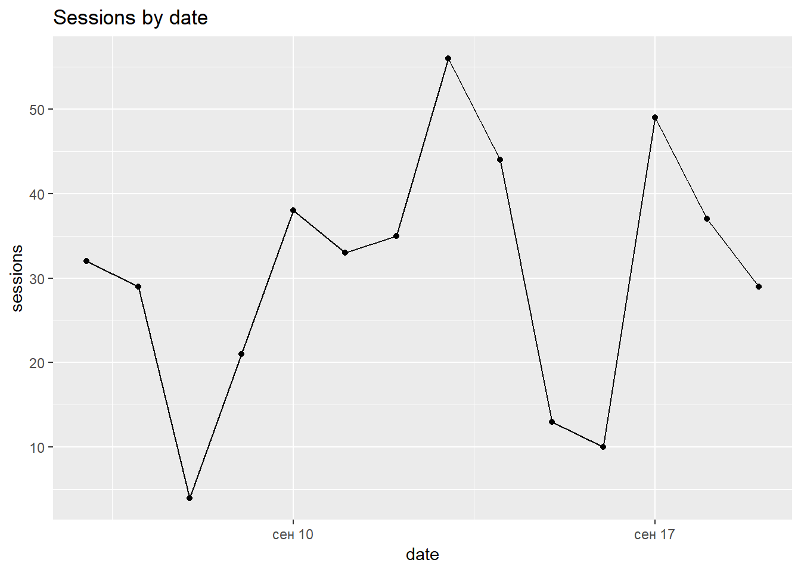
# with group
ga_data %>%
group_by(date, medium) %>%
summarise(sessions = sum(sessions)) %>%
qplot(data = .,
x = date,
y = sessions,
group = medium,
geom = c("line", "point"),
main = "Sessions by date and medium",
color = medium)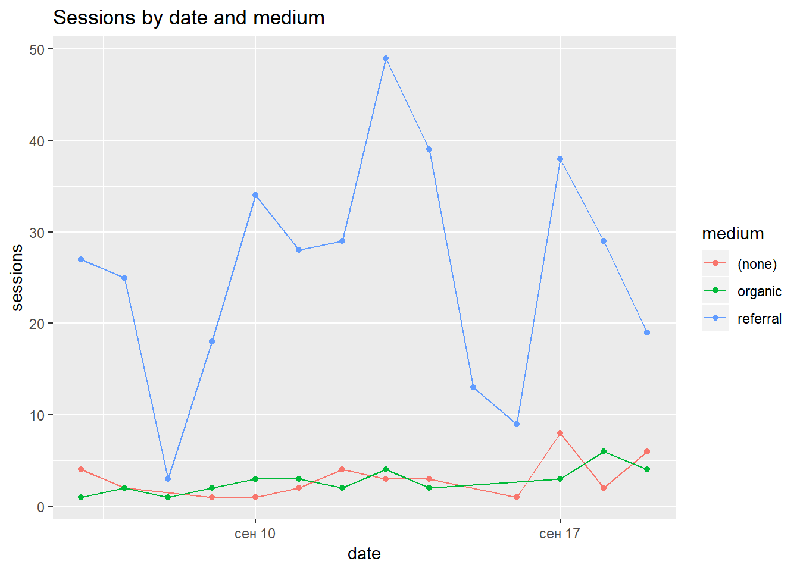
# with facets
ga_data %>%
group_by(date, medium) %>%
summarise(sessions = sum(sessions),
bounce_rate = sum(bounces) / sessions) %>%
qplot(data = .,
x = date,
y = sessions,
group = medium,
geom = c("line", "point"),
main = "Sessions by date and medium",
color = bounce_rate,
facets = medium ~ .)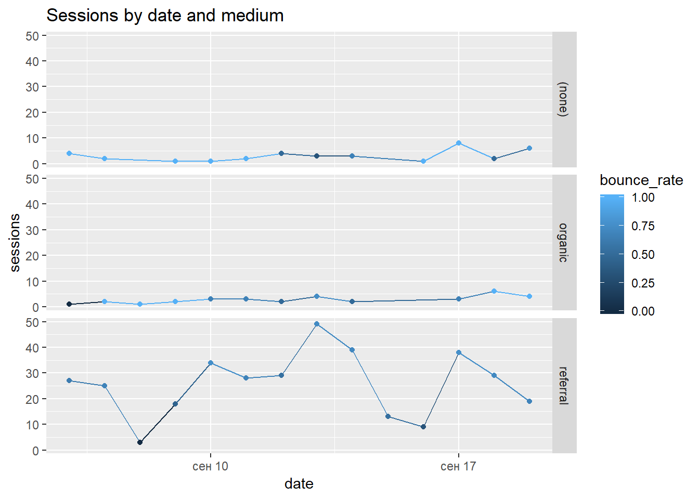
# daily sessions from different medium
ga_data %>%
qplot(data = .,
x = medium,
y = sessions,
geom = c("boxplot"),
fill = medium,
main = "Daily sessions by medium")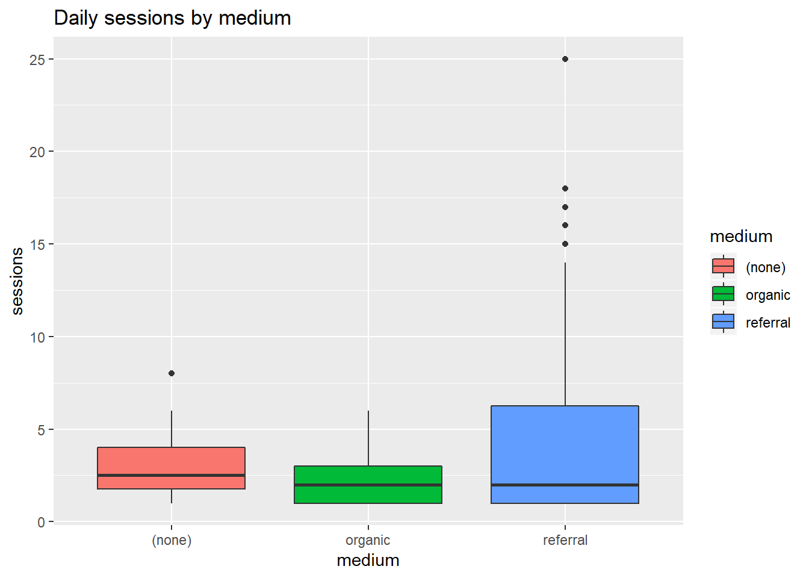
# bounce rate by medium
ga_data %>%
group_by(medium) %>%
summarise(bounce_rate = sum(bounces) / sum(sessions)) %>%
qplot(data = .,
x = medium,
y = bounce_rate,
geom = "col",
fill = bounce_rate,
main = "Bounce rate by medium")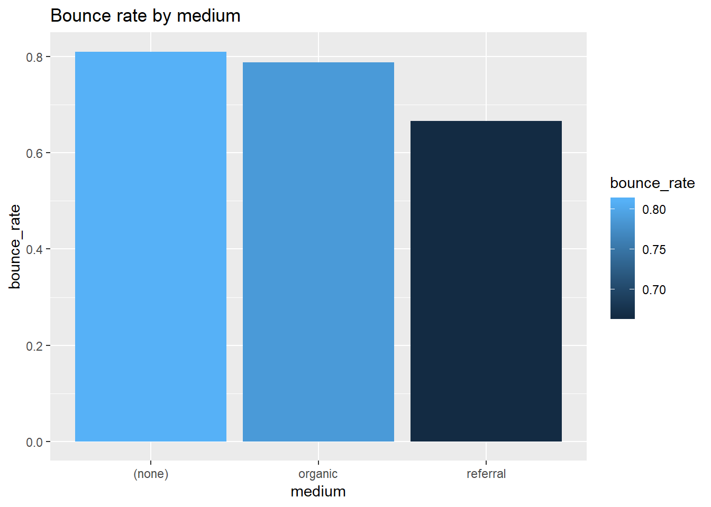
# users by date and medium
ga_data %>%
group_by(date, medium) %>%
summarise(users = sum(users)) %>%
qplot(data = .,
x = date,
y = users,
group = date,
geom = "col",
fill = medium,
main = "Users by date and medium")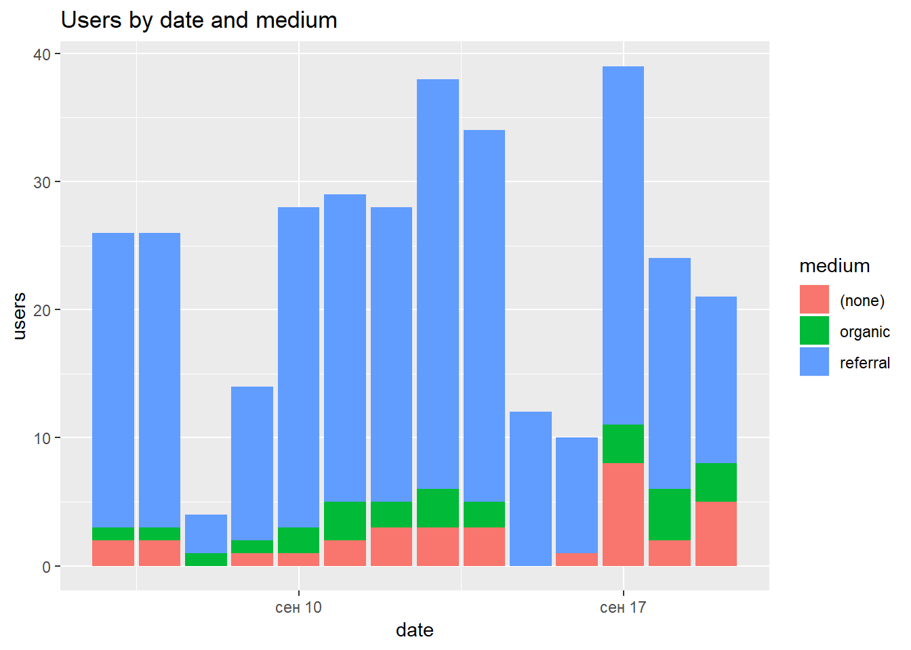
7.2.2 Построение графиков наложением слоёв
Рассмотренная нами функция qplot позволяет вам быстро создать несложный график, но в целом синтаксис пакета ggplot2 позволяет строить и значительно более сложные графики, реализуется такой подход с помощью большого набора функций, каждая функция и является отдельным слоем, к которому вы можете задавать свои настройки, все слои объединяются в один график с помозью знака +.
Первый, основной слой задётся с помощью функции ggplot. Далее мы можем накладывать другие слои с помощью функций семейств:
- geom - геометрии, типы графиков
- aes - Функция для задания эстетических настроек слоя
- scale - шкалы осей x и y
- theme - изменение внешнего вида любого элемента графика
- facet - разбивка графика а подграфики
Пример построения графиков наложением слоёв
В этот раз мы будем визуализировать данные полученные из Logs API Яндекс Метрики.
library(getProxy)
library(rym)
# обход блокировки
getProxy(port = "3128",
country = "RU",
supportsHttps = TRUE,
action = "start")
# loading data
ym_data <- rym_get_logs(counter = "10595804",
date.from = "2018-08-25",
date.to = "2018-09-01",
fields = "ym:s:date,
ym:s:pageViews,
ym:s:visitDuration,
ym:s:regionCity,
ym:s:lastTrafficSource,
ym:s:deviceCategory",
source = "visits",
login = "vipman.netpeak")
# Отключаемся от прокси
getProxy(action = "stop")Далее мы разберём большое количество примеров работы со слоями
- Простая визуализация, построение график ящик с усами
# vizualize
# step_1 - basic
ggplot(data = ym_data, aes(x = ym.s.lastTrafficSource, y = ym.s.pageViews)) +
geom_boxplot()
- Изменяем лимиты по оси y, таким образом убирая выбросы В первом случае мы задаём лимиты с помощью слоя
coord_cartesian, который принимает ектор из двух числовых значений, это минимальное и максимальное допустимое значение, функциияcoord_cartesianработает как увеличительное стеклопросто увеличивает указанную вами часть графика, при этом из таблицы данных никакая информация не удаляется.
# step_2 - remove outliers
# zoom
ggplot(data = ym_data, aes(x = ym.s.lastTrafficSource, y = ym.s.pageViews)) +
geom_boxplot() +
coord_cartesian(ylim = c(0, 20))
Теперь мы ограничим значение по оси y с помощью функции ylim, данная функция удаляет из таблицы данных все строки которые выходят за пределы указанных минимального и максимального значения, что повлечёт за собой изменение среднего значения и медианы, и в целом всех квартилей.
# remove
ggplot(data = ym_data, aes(x = ym.s.lastTrafficSource, y = ym.s.pageViews)) +
geom_boxplot(fill = "blue") +
ylim(0, 20)## Warning: Removed 5898 rows containing non-finite values (stat_boxplot).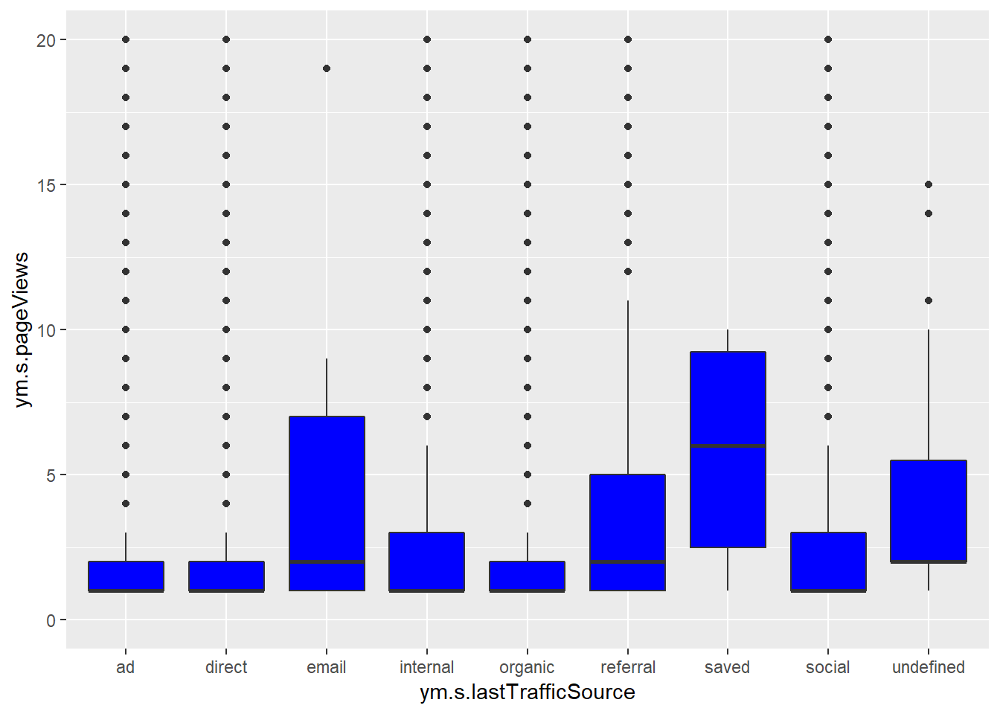
- Теперь попрбуем изменить цвет ящиков в зависимости от медианного значения количества просмотров, и с помощь функции
scale_fill_gradientукажем тчо мы хотим градиентный переход в зависимости от этого значения.
# step_3 - color
group_by(ym_data, ym.s.lastTrafficSource) %>%
mutate(m_pageviews = median(ym.s.pageViews)) %>%
ggplot(data = ., aes(x = ym.s.lastTrafficSource, y = ym.s.pageViews)) +
geom_boxplot(aes(fill = m_pageviews)) +
coord_cartesian(ylim = c(0, 20)) +
scale_fill_gradient(low = "red", high = "green")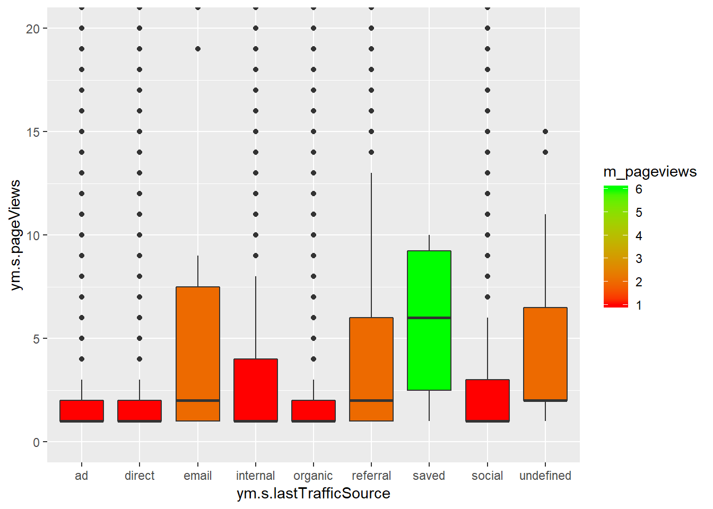
- Следующий шаг - отсортировать переменные оси x в порядке убывания, таким образом что бы первый, самый левый ящие соответсовал каналу с самым высоким медианным значением количества просмотра страниц на сеанс, а самымй правый наоборот соответсвовал каналу в котором наименьшее медианное значение количества просмотра страниц на сеанс, делается это с помощью пересортировки уровней фактора через функции
withиreorder.
# step_4 - reorder
ym_data$ym.s.lastTrafficSource <- with(ym_data, reorder(ym.s.lastTrafficSource, ym.s.pageViews, function(x) -median(x)))
group_by(ym_data, ym.s.lastTrafficSource) %>%
mutate(m_pageviews = median(ym.s.pageViews)) %>%
ggplot(data = ., aes(x = ym.s.lastTrafficSource, y = ym.s.pageViews)) +
geom_boxplot(aes(fill = m_pageviews)) +
coord_cartesian(ylim = c(0, 20)) +
scale_fill_gradient(low = "red", high = "green")
- Разбиваем полученные графики на подграфики с помощью функции
facet_grid.
# step_5 - facet
ym_data$device <- vapply(ym_data$ym.s.deviceCategory,
FUN = function(x) switch(x,
"1" = "десктоп",
"2" = "мобильные телефоны",
"3" = "планшеты",
"4" = "TV"),
FUN.VALUE = "character")
group_by(ym_data, ym.s.lastTrafficSource, device) %>%
mutate(m_pageviews = median(ym.s.pageViews)) %>%
ggplot(data = ., aes(x = ym.s.lastTrafficSource, y = ym.s.pageViews)) +
geom_boxplot(aes(fill = m_pageviews)) +
coord_cartesian(ylim = c(0, 20)) +
scale_fill_gradient(low = "red", high = "green") +
facet_grid(device ~ .)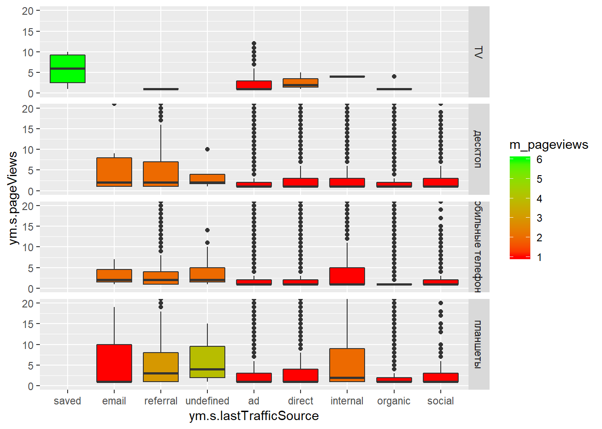
- С помощью функции
themeизменим ориентацию подписей оси x с горихонтальной на вертикальную, и немного увеличим шрифт.
# step_6 - themes
group_by(ym_data, ym.s.lastTrafficSource, device) %>%
mutate(m_pageviews = median(ym.s.pageViews)) %>%
ggplot(data = ., aes(x = ym.s.lastTrafficSource, y = ym.s.pageViews)) +
geom_boxplot(aes(fill = m_pageviews)) +
coord_cartesian(ylim = c(0, 20)) +
scale_fill_gradient(low = "red", high = "green") +
facet_grid(device ~ .) +
theme(axis.text.x = element_text(angle = 90, hjust = 1, vjust = 0.5, size = 12))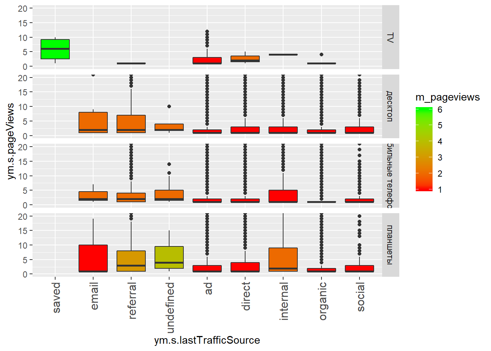
- Так же мы можем менять общую тему всего графика применяю уже готовые темы с помощью семейства функций
theme.
group_by(ym_data, ym.s.lastTrafficSource, device) %>%
mutate(m_pageviews = median(ym.s.pageViews)) %>%
ggplot(data = ., aes(x = ym.s.lastTrafficSource, y = ym.s.pageViews)) +
geom_boxplot(aes(fill = m_pageviews)) +
coord_cartesian(ylim = c(0, 20)) +
scale_fill_gradient(low = "red", high = "green") +
facet_grid(device ~ .) +
theme(axis.text.x = element_text(angle = 90, hjust = 1, vjust = 0.5, size = 12)) +
theme_classic()
group_by(ym_data, ym.s.lastTrafficSource, device) %>%
mutate(m_pageviews = median(ym.s.pageViews)) %>%
ggplot(data = ., aes(x = ym.s.lastTrafficSource, y = ym.s.pageViews)) +
geom_boxplot(aes(fill = m_pageviews)) +
coord_cartesian(ylim = c(0, 20)) +
scale_fill_gradient(low = "red", high = "green") +
facet_grid(device ~ .) +
theme(axis.text.x = element_text(angle = 90, hjust = 1, vjust = 0.5, size = 12)) +
theme_dark()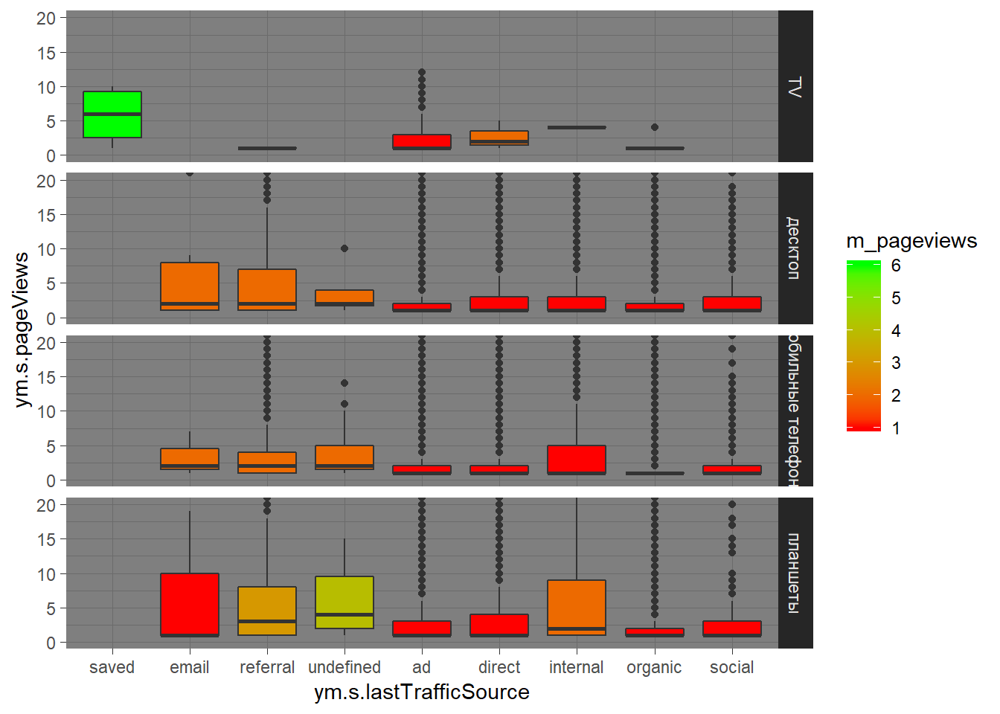
- Пример использования наложения разу 3ёх слоёв и изменения некоторых настроек каждого слоя в отдеьности.
# more layers
group_by(ym_data, ym.s.date) %>%
summarise(page_pr_sessions = sum(ym.s.pageViews) / n()) %>%
ggplot(data = ., aes(x = ym.s.date, y = page_pr_sessions, group = 1)) +
geom_line(color = "blue") +
geom_point(color = "red", size = 3) +
geom_smooth()## `geom_smooth()` using method = 'loess' and formula 'y ~ x'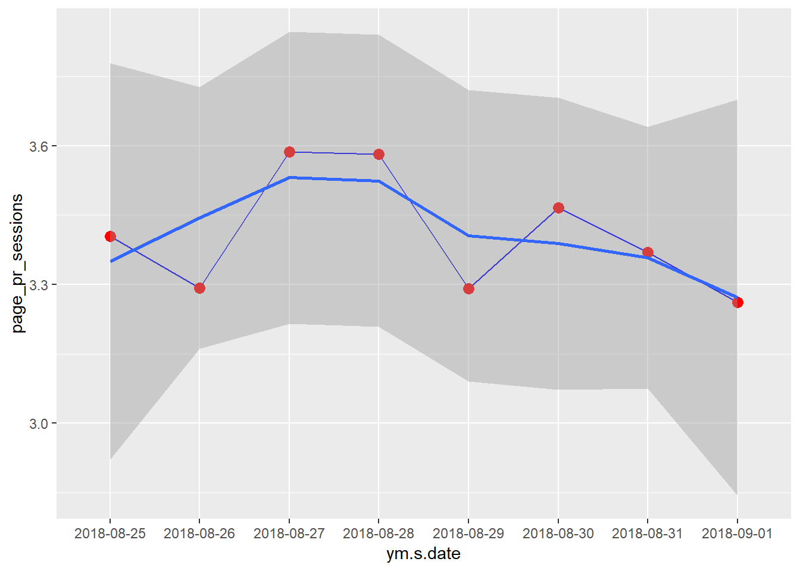
7.3 Работа с базами данных, DBI - Интерфейс взаимодействия с базами данных
DBI - это интерфейс взаимодействия с базами данных.
Основные функции для работы с базами данных
dbConnect- Подключение к базе данныхdbWriteTable- Запись таблицы в базу данныхdbReadTable- Загрузка таблицы из базы данныхdbGetQuery- Получить результат выполнения запросаdbSendQuery- Отправка запроса к базе данныхdbFetch- Извлечени еэлементов из набора результатовdbGetInfo- Получить информацию о результате запроса или подключенииdbListFields- Получить список полей таблицыdbListTables- Список таблиц базы данныхdbExistsTable- Проверка наличия таблицы в базе данныdbRemoveTable- Удаление таблицы из базы данныхdbDisconnect- Отсоединение от базы данных
7.3.1 Работа с СУБД MySQL
MySQL - это одна из наиболее популярных, бесплатных, клиент-серверных баз данных.
Для работы с какой либо базой данных помимо пакета DBI необходимо установить дополнительный пакет, который является драйвером и интерфейсом для работы с какой либо конкретной базой данных, для работы с MySQL моожно установить либо RMySQL либо его более актуальную интерпритацию RMariaDB.
Жанные пакеты можно устанавливать из CRAN: install.packages("RMariaDB")
Следующий скрипт демонстрирует использование всех перечисленных выше функций, в нём мы изначально подключимся к базе данных MySQL, поле чего загрузим некоторые данные из API Facebook, и отправим эи данные в базу данных, после чего продемонстрируем как обратно считать записанные рание данные, и то как работать с другими функциями DBI интерфейса.
Пример
library(RMariaDB)
library(rfacebookstat)
# Подключаемя к базе данных
con <- dbConnect(drv = MariaDB(),
user = "имя пользователя",
password = "пароль",
host = "localhost",
port = "3306",
dbname = "название базы данных")
# Загрузка данных из facebook
# более подробно о том как работать с API Facebook написано во второй части
load("C:\\r_for_marketing_course\\Материалы курса\\Модуль 2\\Урок 4\\fb_token.RData")
my_fb_stats <- fbGetMarketingStat(accounts_id = "act_111111111",
level = "ad",
fields = "account_name,campaign_name,ad_id,impressions,clicks",
breakdowns = "impression_device",
date_start = Sys.Date() - 20,
date_stop = Sys.Date() - 11,
interval = "day",
access_token = fb_token)
# Запись данных в MySQL
dbWriteTable(conn = con,
value = my_fb_stats,
name = "fb_data",
append = TRUE,
overwrite = FALSE,
row.names = FALSE)
# Загрузка таблицы из базы данных
mysql_table <- dbReadTable(conn = con, name = "fb_data")
# Загрузка результата выполнения запроса
query_table <- dbGetQuery(conn = con,
statement = "SELECT impression_device, SUM(clicks) as clicks
FROM fb_data
GROUP BY impression_device")
query_table_2 <- dbSendQuery(conn = con,
statement = "SELECT impression_device, SUM(clicks) as clicks
FROM fb_data
GROUP BY impression_device")
class(query_table_2)
dbGetInfo(query_table_2) # query info
query_table_2_data <- dbFetch(res = query_table_2, n = -1) # get data
dbGetInfo(query_table_2) # query info
dbClearResult(query_table_2) # cleare
dbGetInfo(query_table_2) # query info
# Загрузка списка полей из таблицы
dbListFields(conn = con, "fb_data")
# Загрузка списка таблициз базы данных
dbListTables(con)
# Проверка наличия таблицы в базе данных
dbExistsTable(conn = con, "fb_data")
# Удаление таблицы
dbRemoveTable(conn = con, "fb_data")
# Проверка наличия таблицы в базе данных
dbListTables(con)
# Отключение от базы данных
dbDisconnect(con)Функция dbConnect создаёт объект подключения к базе данных, в случае работы с клиент серверными базами данных для подключения вам необходимо будет использовать следующие аргумены:
- drv - Функция которая является драйвером для работы с базой данных, если мы говорим о пакете
RMariaDBто необходимо указатьMariaDB(), если вы используете пакетRMySQLто необходимо указатьMySQL(). - user = Имя пользователя базы данных
- password = Пароль для подключения к базе данных
- host = IP адрес сервера базы данных
- port = Порт, для MySQL стандартным портом является 3306
- dbname = Название базы данных к которой вы будете подключаться
Далее полученный с помощью функции dbConnect объект вы будете использовать во всех остальных функции для работы с базой данных.
Для записи информации в базу данных необходимо использовать dbWriteTable, указав следующие аргументы.
- conn - Объект подключения
- value - Данные которые вы хотите записать, как правило это какой либо датафрейм
- name - Название таблицы в которую будут записаны данные
- append - Дописывать ли строки если такая таблица уже существует в базе данных
- overwrite = Перезаписать данные если такая таблица уже существует в базе данных
- row.names = Записывать ли в базу данных имена строк
Все остальные функции пакета имеют интуитивно понятный набор аргументов.
7.3.2 Работа с базой данных PostgreSQL
PostgreSQL - Свободная объектно-реляционная система управления базами данных.
Для работы с PostgreSQL вам необходимо установить пакет RPostgreSQL - install.packages("RPostgreSQL")
Никакой разницы между работой с PostgreSQL через DBI нет, вы будете использовать теже функции как и в примере выше при работе с MySQL, единственное отличие это то, что вам при подключении используя функцию dbConnect, в аргумент drv необходимо передать функцию PostgreSQL().
Пример работы с PostgreSQL
library(RPostgreSQL)
library(rfacebookstat)
# connect
con <- dbConnect(drv = PostgreSQL(),
user = "имя пользоватея БД",
password = "пароль",
host = "IP сервера",
port = "5432",
dbname = "название базы данных")
# check connection
dbGetInfo(con)
# load data
# fb load
load("C:\\r_for_marketing_course\\Материалы курса\\Модуль 2\\Урок 4\\fb_token.RData")
my_fb_stats <- fbGetMarketingStat(accounts_id = "act_11111111111",
level = "ad",
fields = "campaign_name,ad_id,impressions,clicks",
breakdowns = "impression_device",
date_start = Sys.Date() - 20,
date_stop = Sys.Date() - 1,
interval = "day",
access_token = fb_token)
# send to mysql
dbWriteTable(conn = con,
value = my_fb_stats,
name = "fb_data",
append = TRUE,
overwrite = FALSE,
row.names = FALSE,
field.types = c(campaign_name = "character(300)",
ad_id = "bigint",
impressions = "integer",
clicks = "integer",
date_start = "date",
date_stop = "date",
impression_device = "character(100)"))
# load data from mysql
pgsql_table <- dbReadTable(conn = con, name = "fb_data")
# load by sql query
query_pgsql <- dbGetQuery(conn = con,
statement = "SELECT impression_device, SUM(clicks) as clicks
FROM fb_data
GROUP BY impression_device")
# fields of table
dbListFields(conn = con, "fb_data")
# search table
dbListTables(con)
dbExistsTable(conn = con, "fb_data")
# drop table
dbRemoveTable(conn = con, "fb_data")
# check
dbListTables(con)
# disconnect
dbDisconnect(con)7.3.3 Работа с базой данных SQLite
SQLite — компактная встраиваемая СУБД. Исходный код библиотеки передан в общественное достояние. В 2005 году проект получил награду Google-O’Reilly Open Source Awards.
SQLite достаточно удобна для локального хранения данных, база не требует установки, и легко может быть интегрирована в ваши скрипты.
Работа с SQLite через DBI интерфейс практически не отличается от рассмотренных ранее примеров с MySQL и PostgreSQL, в данном случае мы будем использовать пакет RSQLite и при использовании функции dbConnect для подключения к SQLite вам достаочно всего лишь указать в аргумент drv функцию SQLite() и в качестве второго аргемента указать название базы данных которую вы будете использовать, база даннх является локальным файлом с расширением .db, если указанная база данных не была найдена в рабочей директории она будет создана автоматически.
Пример кода для работы с SQLite
# go to wd
setwd("C:\\r_for_marketing_course\\Материалы курса\\Модуль 3\\Урок 3")
# connection or create base
con <- dbConnect(drv = SQLite(),
"r_cource_test_base.db")
# fb load
load("C:\\r_for_marketing_course\\Материалы курса\\Модуль 2\\Урок 4\\fb_token.RData")
my_fb_stats <- fbGetMarketingStat(accounts_id = "act_262115113",
level = "ad",
fields = "campaign_name,ad_id,impressions,clicks",
breakdowns = "impression_device",
date_start = Sys.Date() - 20,
date_stop = Sys.Date() - 11,
interval = "day",
access_token = fb_token)
# send to mysql
dbWriteTable(conn = con,
value = my_fb_stats,
name = "fb_data",
append = FALSE,
overwrite = FALSE,
row.names = FALSE,
field.types = c(campaign_name = "character(300)",
ad_id = "bigint",
impressions = "integer",
clicks = "integer",
date_start = "date",
date_stop = "date",
impression_device = "character(100)"))
# load data from mysql
sqlite_table <- dbReadTable(conn = con, name = "fb_data")
# load by sql query
query_sqlite <- dbGetQuery(conn = con,
statement = "SELECT impression_device, SUM(clicks) as clicks
FROM fb_data
GROUP BY impression_device")
# fields of table
dbListFields(conn = con, "fb_data")
# search table
dbListTables(con)
dbExistsTable(conn = con, "fb_data")
# drop table
dbRemoveTable(conn = con, "fb_data")
# check
dbListTables(con)
# disconnect
dbDisconnect(con)7.3.4 Работа с облачной базой данных Google BigQuery
[Google BigQuery}(https://netpeak.net/ru/blog/google-bigquery-podrobnyy-obzor-funktsii/) - Это облачная база данных с высочайшей скоростью обработки огромных массивов данных.
Для работы с Google BigQuery из R необходимо установить пакет bigrquery. Устновка из CRAN: install.packages("bigrquery") Установка из GitHub: devtools::install_github("r-dbi/bigrquery")
В отличае от приведённых выше примеров взаимодействовать с BigQuery из R можно как через DBI интефейс, так и через низкоуровневный API интерфейс.
7.3.4.1 Взаимодействие с Google BigQuery через низкоуровневный API интерфейс
Для начала приведу пример кода для загрузки данных из API Facebook, которые мы будем использовать в качестве примера для работы с SQLite.
library(rfacebookstat)
# fb load
load("C:\\r_for_marketing_course\\Материалы курса\\Модуль 2\\Урок 4\\fb_token.RData")
my_fb_stats <- fbGetMarketingStat(accounts_id = "act_262115113",
level = "ad",
fields = "campaign_name,ad_id,impressions,clicks",
breakdowns = "impression_device",
date_start = Sys.Date() - 20,
date_stop = Sys.Date() - 11,
interval = "day",
access_token = fb_token)Далее рассмотрим функции для работы с низкоуровневым API интерфейсом Google BigQuery.
bq_table- Обращение к таблицеbq_dataset- Обращение к набору данныхbq_dataset_query- Отправка запроса к набору данныхbq_project_query- Отправка запроса к проектуbq_table_upload- Загрузка данных в таблицуbq_table_download- Загрузка таблицы из BigQuery в Rbq_table_exists- Проверка наличия таблицыbq_table_fields- Получить список полей таблицыbq_table_delete- Удалить таблицу
Основные аргументы
- project - ID проекта
- dataset - Название набора данных
- table - Название таблицы
- values - Данные которые вы хотите записать в BigQuery
- create_disposition - Что делать если заданная таблица не найдена в базе, CREATE_IF_NEEDED - создать при необходимости, CREATE_NEVER не создавать таблицу если такой таблицы нет в базе данных
- write_disposition - Что делать если заданная таблица в которую вы хотите записать данные уже существует в базе:
- WRITE_APPEND - Дописать новые данные под старыми
- WRITE_EMPTY - Записать данные только если указанная таблица пустая
- WRITE_TRUNCATE - Заменить старые данные новыми, перезапись таблицы
- use_legacy_sql - Использовать в запросе стандартный SQL Диалект
Пример работы с низкоуровневым API
# write data
bq_table(project = "rcourse-215606",
dataset = "course_ds",
table = "bq_fb") %>%
bq_table_upload(x = .,
values = my_fb_stats,
create_disposition = "CREATE_IF_NEEDED",
write_disposition = "WRITE_APPEND")
# load table
bq_table <- bq_table(project = "rcourse-215606",
dataset = "course_ds",
table = "bq_fb") %>%
bq_table_download()
# load by sql
sql_text <- "SELECT impression_device, SUM(clicks) as clicks
FROM course_ds.bq_fb
GROUP BY impression_device"
# project
bq_query_p <- bq_project_query(x = "rcourse-215606",
query = sql_text,
use_legacy_sql = TRUE) %>%
bq_table_download()
# dataset
sql_text <- "SELECT impression_device, SUM(clicks) as clicks
FROM bq_fb
GROUP BY impression_device"
bq_query_ds <- bq_dataset(project = "rcourse-215606",dataset = "course_ds") %>%
bq_dataset_query(query = sql_text) %>%
bq_table_download()
# exist table
bq_table(project = "rcourse-215606",dataset = "course_ds", table = "bq_fb") %>%
bq_table_exists()
# fields
bq_table(project = "rcourse-215606",dataset = "course_ds", table = "bq_fb") %>%
bq_table_fields()
# remove table
bq_table(project = "rcourse-215606",dataset = "course_ds", table = "bq_fb") %>%
bq_table_delete()
bq_table(project = "rcourse-215606",dataset = "course_ds", table = "bq_fb") %>%
bq_table_exists()7.3.4.2 Работа с BigQuery через DBI
Опять же разница с прошлыми примерам только в процессе подключения через функцию dbConnect, в качестве аргументов для работы с BigQuery вам необходимо указать drv = bigquery(), а так же передать в агрументы project и dataset, ID проекта и название набора данных соответсвенно.
GПример работы через DBI интерфейс
# DBI
con <- dbConnect(drv = bigquery(),
project = "rcourse-215606",
dataset = "course_ds")
# write
dbWriteTable(conn = con,
name = "bq_fb",
value = my_fb_stats,
append = TRUE,
overwrite = FALSE,
row.names = FALSE)
# read
bq_table_2 <- dbReadTable(con, "bq_fb")
# read sql
bq_sql <- DBI::dbGetQuery(conn = con,
statement = "SELECT impression_device, SUM(clicks) as clicks
FROM bq_fb
GROUP BY impression_device")
# fields of table
dbListFields(conn = con, "bq_fb")
# search table
dbListTables(con)
dbExistsTable(conn = con, "bq_fb")
# drop table
dbRemoveTable(conn = con, "bq_fb")
# check
dbListTables(con)
# disconnect
dbDisconnect(con)7.4 Отправка почты с помощью R
Для отправки писем из R мне встречалось несколько пакетов, наиболее удобным и функциональным мне показался пакет mailR. Работу с этим пакетом я подробно описывал в статье “Как настроить отправку писем с помощью языка R”, в данном конспекте будет так же описаны основные работы с пакетом mailR и htmlTable котрый позволяет переводить данные ваших дата фреймов в HTML формат, и таким образом встраивать в письмо красиво оформленные HTML таблицы.
Устновка пакетов:
install.packages("mailR")
install.packages("htmlTable")Для отправки писем в пакете mailR есть функция send.mail.
Аргументы функции send.mail
- from - Email адрес отправителя
- to - Вектор содержащий email адреса получателей
- subject - Тема письма
- body - Тело письма
- encoding - Кодировка текста
- inline - Логическое выражение, необходимо установить TRUE если вы хотите использовать в письме изображения храненящиеся локально
- html - Логическое выражение, TRUT если тело письма оформлено в HTML формате
- smtp - Настройки SMTP сервера, для удобства ссылки на настройки наиболее популярных почтовых сервисов: яндекс, gmail и mail.ru
- Аргументы для настройки SMTP сервера:
- host.name - адрес почтового сервера
- port - порт
- user.name - имя пользователя для авторизации
- passwd - пароль для авторизации
- ssl - использовать или нет ssl шифрование
- Аргументы для настройки SMTP сервера:
- authenticate - Логическая переменная, указывающая, требуется ли авторизация для подключения к SMTP-серверу.
- send - Логическое значение указывает, следует ли отправлять сообщение по электронной почте в конце функции.
- attach.files - Путь к файлам которые должны быть прикреплены к письму
Для преобразование дата фрейма в таблицу HTML формата необходимо использовать функцию htmlTable из одноимённого пакета, обязательным аргументом данной функции является передача объекта, дата фрейма который вы хотите преобразовать, все остальные аргументы не обязательные и отвечаюют за настройку внешнего вида итоговой HTML таблицы, посмотреть все доступные аргументы вы можете с помощью команды ?htmlTable::htmlTable.
В качестве примера я примеду скрипт, который запросит данные из Google Ads, далее с помощью пакета dplyr очистит и преобразует данные к нужному виду.
Далее для того, что бы сгруппировать все ключевые слова по уровню показателя качества мы напишем собственную функцию, которая распределит все ключевые слова в одну из трёх групп:
- low - ключевые слова с показателям качества 1 - 4 балла
- middle - ключевые слова с показателям качества 5 - 6 баллов
- high - ключевые слова с показателям качества 7 - 10 баллов
После чего с помощью пакета ggplot2 мы сохраним полученные данные в виде графика и с помощью функции htmlTable мы преобразуем полученные из Google Ads данные в формат HTML таблицы.
В конце скрипта мы создадим объект msg который будет является телом письма в HTML формате и через функцию send.mail отправим полученное письмо.
Пример
library(mailR)
library(htmlTable)
library(RAdwords)
library(dplyr)
library(ggplot2)
library(stringr)
# wd
setwd("C:/r_for_marketing_course/Материалы курса/Модуль 3/Урок 4/")
# load data from Google AdWords
load("C:/r_for_marketing_course/Материалы курса/Модуль 2/Урок 2/.google.auth.RData")
body <- statement(select = c('AdGroupName',
'Id',
'Impressions',
'Clicks',
'Cost',
'Ctr',
'AveragePosition',
'CreativeQualityScore',
'PostClickQualityScore',
'SearchPredictedCtr',
'QualityScore'),
report = "KEYWORDS_PERFORMANCE_REPORT",
start = Sys.Date() - 8,
end = Sys.Date() - 1)
adwordsData <- getData(clientCustomerId = "000-000-0000",
google_auth = google_auth,
statement = body)
# cleare data
adwordsData <- filter(adwordsData, Qualityscore != " --") %>%
mutate(Qualityscore = as.integer(Qualityscore))
# detect QS group
## create fun
qs_group_detect <- function (x) {
if (x <= 4) {
return("low")
} else if ( between(x, left = 5, right = 6 ) ) {
return("middle")
} else {
return("high")
}
}
## detect group
for (i in 1:nrow(adwordsData)) {
adwordsData$QSGroup[i] <- qs_group_detect(adwordsData$Qualityscore[i])
}
# create dashboard
## create table
html_table <- select(adwordsData, Adgroup, Impressions, Clicks, Qualityscore) %>%
group_by(Adgroup) %>%
summarise(Impressions = sum(Impressions),
Clicks = sum(Clicks),
Qualityscore = median(Qualityscore)) %>%
htmlTable(col.rgroup = c("lightyellow", "navajowhite"),
css.cell = "font-family: Verdana; font-size: 10px",
rnames = FALSE)
## create plots
### reorder afactor
adwordsData$QSGroup <- factor(adwordsData$QSGroup, levels = c("high", "middle", "low"))
### vizualisation
qsgroup_plot <- adwordsData %>%
ggplot(aes(x = Adgroup)) +
geom_bar(aes(fill = QSGroup), position = "fill") +
scale_fill_manual(breaks = c("high", "middle", "low"),
values = c(high = "forestgreen", middle = "tan1" , low = "firebrick1")) +
scale_y_continuous(labels = scales::percent) +
theme(axis.text.x = element_text(angle = 90, hjust = 1, vjust = 0.5, size = 8)) +
ggtitle("Distribution keywords by quality score group")
### save plot to png
ggsave(filename = "keyword_group.png", device = "png", plot = qsgroup_plot)
## create letter
msg <- str_interp('<body>
<h2>Тестовый дайджест отправленный из R</h2>
<p>Этот дайджест сформирован на основе данных полученных из Google Ads.</p>
<br>
<h3>Таблица созданная с помощью пакета htmlTable</h3>
${html_table}
<br>
<h3>График созданный с помощью пакета ggplot2</h3>
<img src="keyword_group.png" width="500"></center>
<br>
<p>Дата формирования дайджеста: ${Sys.Date()}</p>
</body>')
# send letter
# before send
browseURL("https://myaccount.google.com/lesssecureapps")
send.mail(from = "email отправителя",
to = "email получателя",
subject = "Тема письма",
body = msg,
encoding = "utf-8",
inline = TRUE,
html = TRUE,
smtp = list(host.name = "smtp.gmail.com",
port = 465,
user.name = "ваш логин",
passwd = "ваш пароль",
ssl = TRUE),
authenticate = TRUE,
send = TRUE)Более подробно данный скрипт разобран в видео уроке.
7.5 Как настроить запуск R скриптов по рассписанию
На данном этупе вы уже получили навыки по программированию на R, сбору данных из API всевозможных сервисов, и тому как вы можете использовать собранные данные, всё что нам осталось разобраться как настроить запуск разработанных скриптов по рассписанию.
На самом деле есть 3 варианта настроить расписание запуска скриптов в R.
- Через плагин в RStudio
- С помощью функций пакета taskscheduleR
- Самостоятельно в планировщике задач Windows
7.5.1 Настройка расписание через плагин
Это пожалуй самый простой способ настроить рассписание запуска ваших скриптов, для начала необходимо установить пакет taskscheduleR, после чего в интервфейск RStudio вам будет доступен плагин, найти его можно в меню Addins.
Плагин в интерфейсе RStudio
После чего откроется диалоговое окно в котором вы сможете настроить рассписание запуска любого созданного вами скрипта.
Настройка рассписания через плагин
7.5.2 Настройка расписание с помощью функций пакета taskscheduleR
taskscheduler_create- Создать задачуtaskscheduler_ls- Получить список всех задачtaskcheduler_runnow- Запустить выполнение задачиtaskscheduler_delete- Удалить задачу
Пример
library("taskscheduleR")
script_path <- "C:\\r_for_marketing_course\\Материалы курса\\Модуль 3\\Урок 5\\my_script.R"
# create task
taskscheduler_create(taskname = "google_ads_daily",
rscript = "C:\\r_for_marketing_course\\Материалы курса\\Модуль 3\\Урок 5\\my_script.R",
schedule = "DAILY",
starttime = "09:30",
startdate = format(Sys.Date(), "%d.%m.%Y"))
# get task list
task <- taskscheduler_ls(fileEncoding = "CP866")
# start task
taskcheduler_runnow(taskname = 'google_ads_daily')
# delete task
taskscheduler_delete(taskname = "google_ads_daily")7.5.3 Ручная настройка рассписания через планировщик задач Windows
Данный процесс подробно был описан мной в статье “Как настроить запуск R-скрипта по расписанию?”.
Процесс ручного создания задачи на запуск R скрипта
Прописываем в переменную среды Path, путь к папке bin, которая находится в папке куда вы устновили язык R, как правило путь “C:\Program Files\R\R-3.5.1\bin”, обычно в пути меняется только номер версии.
Создаём bat файл в котором пишем “R CMD BATCH путь к скрипту который надо запустить”
После чего открываем планировщик задач, открыть его можно по следующему пути “%windir%\system32\taskschd.msc /s”
Создаём новую задачу и настраиваем рассписание запуска.